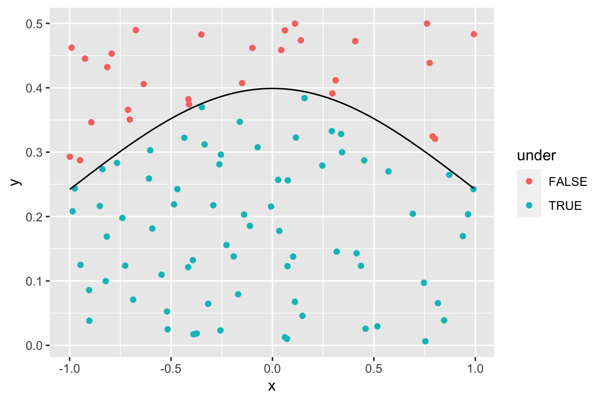
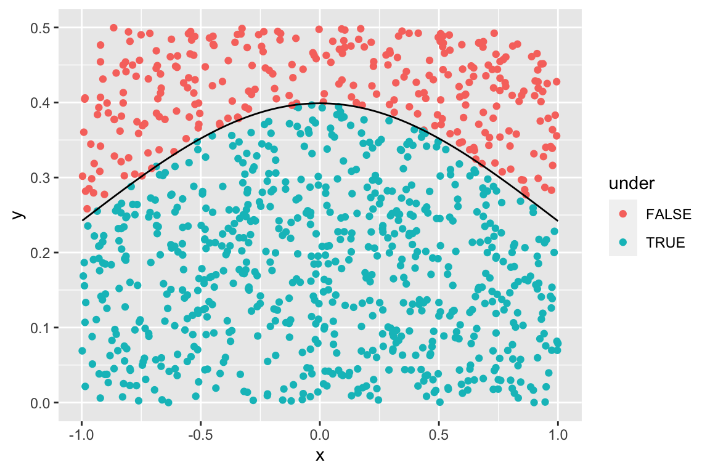
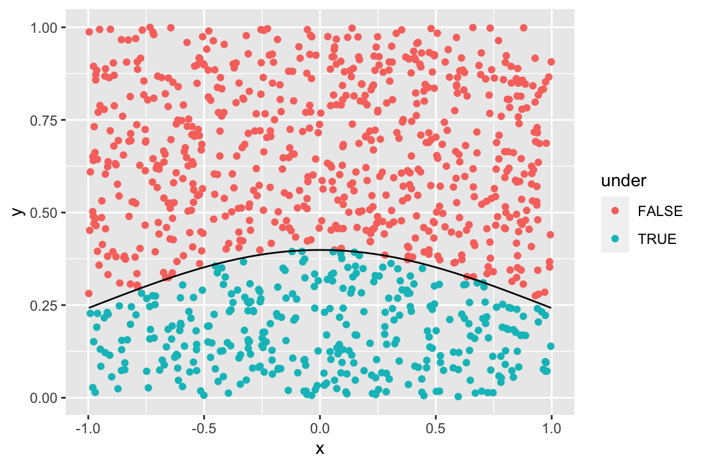
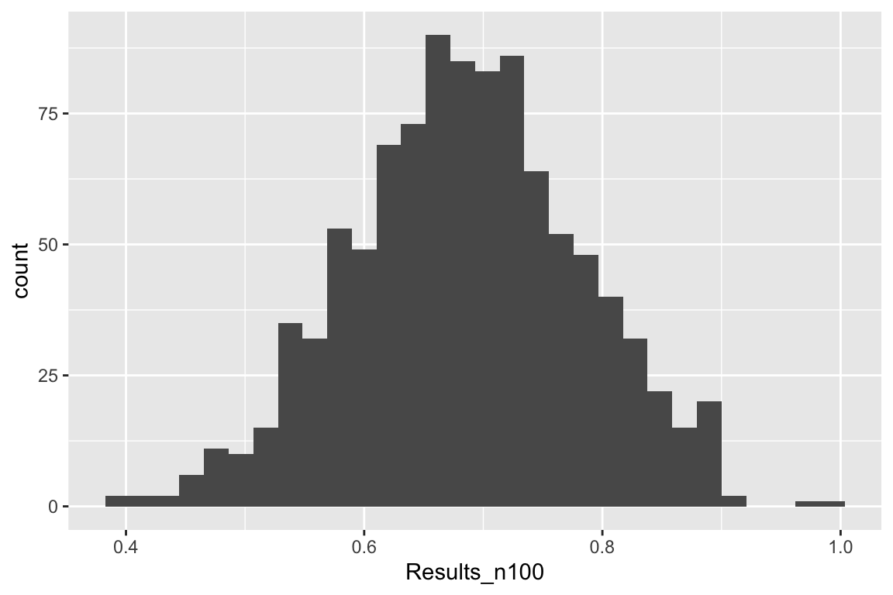
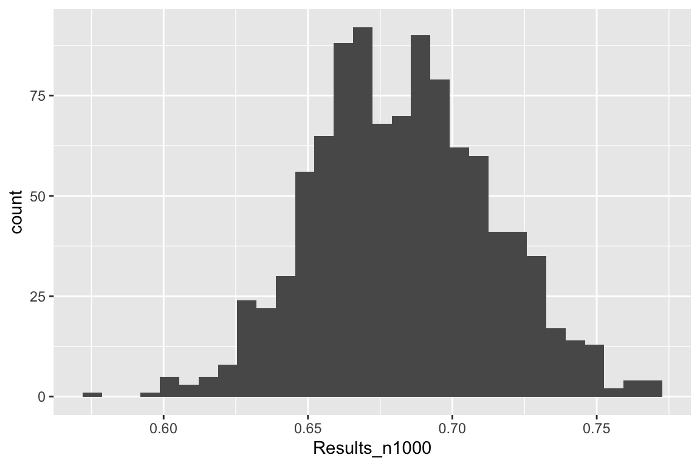
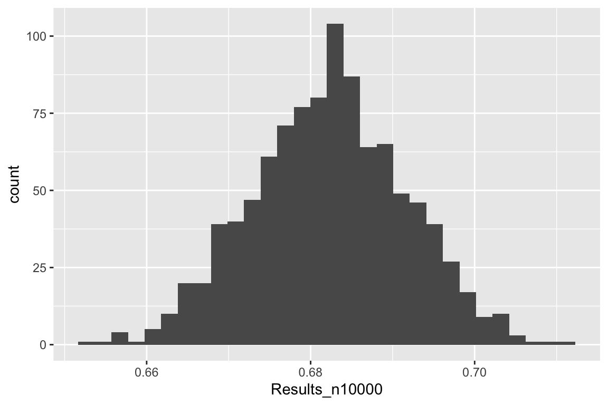

Chapter 5 Programming
library(tidyverse)
library(rvest)This module pertains to chapters 17 -21 in Wickham and Grolemund's text. We'll learn about basic programming in R.
library(tidyverse)5.1 Vectors
Let's investigate how R performs operations on vectors. We'll start by generating four vectors.
x <- 1:10 # integers from 1 through 10
y <- seq(from = 2, to =29, by =3) # count from 2 to 29 by increments of 3
z <- rep(7, 5) # repeat 7, 5 times
w <- sample(1:10, 6) #randomly select six integers from 1 to 10x## [1] 1 2 3 4 5 6 7 8 9 10y## [1] 2 5 8 11 14 17 20 23 26 29z## [1] 7 7 7 7 7w## [1] 7 1 9 5 3 2Practice 5.1.1
Perform each of the following operations in R. Write a sentence explaining what each operation does. If anything surprises you, note that.
typeof(x)## [1] "integer"x + 5## [1] 6 7 8 9 10 11 12 13 14 15x + y## [1] 3 7 11 15 19 23 27 31 35 39x * y## [1] 2 10 24 44 70 102 140 184 234 290x + z## [1] 8 9 10 11 12 13 14 15 16 17x + w## [1] 8 3 12 9 8 8 14 9 18 15sort(x)## [1] 1 2 3 4 5 6 7 8 9 10length(x)## [1] 10mean(x)## [1] 5.5x > 5## [1] FALSE FALSE FALSE FALSE FALSE TRUE TRUE TRUE TRUE TRUEmean(x > 5)## [1] 0.5x %% 5 == 0 ## [1] FALSE FALSE FALSE FALSE TRUE FALSE FALSE FALSE FALSE TRUEy[1]## [1] 2y[3]## [1] 8y[(c(3,1))]## [1] 8 2y[1:5]## [1] 2 5 8 11 14y[-2]## [1] 2 8 11 14 17 20 23 26 29y[x %% 5 == 0]## [1] 14 295.2 Functions
A function takes in one or more inputs and returns one or more outputs.
Example 5.2.1: Function with Real Number Inputs
Write a function called sum_of_squares that takes in two real numbers x and y, and returns the sum of the squares of these numbers.
sum_of_squares <- function(x, y){
# inputs are real numbers x and y
# output is sum of squares of x and y
z <- x^2 + y^2
return(z)
}sum_of_squares(x=3, y=7)## [1] 58sum_of_squares(x= c(1, 3), y=c(2, 4))## [1] 5 25Example 5.2.2: Function with Vectors and Dataframes as Inputs
The starwars dataset contains information on characters that appear in the Star Wars movies.
data(starwars)
head(starwars)## # A tibble: 6 x 14
## name height mass hair_color skin_color eye_color birth_year sex gender
## <chr> <int> <dbl> <chr> <chr> <chr> <dbl> <chr> <chr>
## 1 Luke Sk… 172 77 blond fair blue 19 male mascu…
## 2 C-3PO 167 75 <NA> gold yellow 112 none mascu…
## 3 R2-D2 96 32 <NA> white, bl… red 33 none mascu…
## 4 Darth V… 202 136 none white yellow 41.9 male mascu…
## 5 Leia Or… 150 49 brown light brown 19 fema… femin…
## 6 Owen La… 178 120 brown, grey light blue 52 male mascu…
## # … with 5 more variables: homeworld <chr>, species <chr>, films <list>,
## # vehicles <list>, starships <list>ggplot(data=starwars, aes(x=mass)) + geom_histogram() + ggtitle("Mass Distribution")
starwars %>% arrange(desc(mass))## # A tibble: 87 x 14
## name height mass hair_color skin_color eye_color birth_year sex gender
## <chr> <int> <dbl> <chr> <chr> <chr> <dbl> <chr> <chr>
## 1 Jabba … 175 1358 <NA> green-tan… orange 600 herm… mascu…
## 2 Grievo… 216 159 none brown, wh… green, y… NA male mascu…
## 3 IG-88 200 140 none metal red 15 none mascu…
## 4 Darth … 202 136 none white yellow 41.9 male mascu…
## 5 Tarfful 234 136 brown brown blue NA male mascu…
## 6 Owen L… 178 120 brown, grey light blue 52 male mascu…
## 7 Bossk 190 113 none green red 53 male mascu…
## 8 Chewba… 228 112 brown unknown blue 200 male mascu…
## 9 Jek To… 180 110 brown fair blue NA male mascu…
## 10 Dexter… 198 102 none brown yellow NA male mascu…
## # … with 77 more rows, and 5 more variables: homeworld <chr>, species <chr>,
## # films <list>, vehicles <list>, starships <list>ggplot(data=starwars, aes(x=height)) + geom_histogram() + ggtitle("Height Distribution")starwars %>% arrange(desc(height))## # A tibble: 87 x 14
## name height mass hair_color skin_color eye_color birth_year sex gender
## <chr> <int> <dbl> <chr> <chr> <chr> <dbl> <chr> <chr>
## 1 Yarael… 264 NA none white yellow NA male mascu…
## 2 Tarfful 234 136 brown brown blue NA male mascu…
## 3 Lama Su 229 88 none grey black NA male mascu…
## 4 Chewba… 228 112 brown unknown blue 200 male mascu…
## 5 Roos T… 224 82 none grey orange NA male mascu…
## 6 Grievo… 216 159 none brown, whi… green, y… NA male mascu…
## 7 Taun We 213 NA none grey black NA fema… femin…
## 8 Rugor … 206 NA none green orange NA male mascu…
## 9 Tion M… 206 80 none grey black NA male mascu…
## 10 Darth … 202 136 none white yellow 41.9 male mascu…
## # … with 77 more rows, and 5 more variables: homeworld <chr>, species <chr>,
## # films <list>, vehicles <list>, starships <list>ggplot(data=starwars, aes(x=birth_year)) + geom_histogram() + ggtitle("Birth Year Distribution")starwars %>% arrange(desc(birth_year))## # A tibble: 87 x 14
## name height mass hair_color skin_color eye_color birth_year sex gender
## <chr> <int> <dbl> <chr> <chr> <chr> <dbl> <chr> <chr>
## 1 Yoda 66 17 white green brown 896 male mascu…
## 2 Jabba … 175 1358 <NA> green-tan,… orange 600 herm… mascu…
## 3 Chewba… 228 112 brown unknown blue 200 male mascu…
## 4 C-3PO 167 75 <NA> gold yellow 112 none mascu…
## 5 Dooku 193 80 white fair brown 102 male mascu…
## 6 Qui-Go… 193 89 brown fair blue 92 male mascu…
## 7 Ki-Adi… 198 82 white pale yellow 92 male mascu…
## 8 Finis … 170 NA blond fair blue 91 male mascu…
## 9 Palpat… 170 75 grey pale yellow 82 male mascu…
## 10 Cliegg… 183 NA brown fair blue 82 male mascu…
## # … with 77 more rows, and 5 more variables: homeworld <chr>, species <chr>,
## # films <list>, vehicles <list>, starships <list>mean(starwars$mass, na.rm=TRUE)## [1] 97.31186Why might this not be a good representation of the average mass of star wars characters?
A trimmed mean is a version of the mean that excludes the largest and smallest m numbers (where m is an integer). Calculate trimmed means for mass, height, and birth year that exclude the maximum and minumum values.
Why is the following code sub-optimal
#mass calculation
(sum(starwars$mass, na.rm=TRUE) - min(starwars$mass, na.rm=TRUE) - max(starwars$mass, na.rm=TRUE)) / (sum(!is.na(starwars$mass)) - 2)## [1] 76.6386#height calculation
(sum(starwars$height, na.rm=TRUE) - min(starwars$height, na.rm=TRUE) - max(starwars$height, na.rm=TRUE)) / (sum(!is.na(starwars$height)) - 2)## [1] 174.5949#age calculation
(sum(starwars$birth_year, na.rm=TRUE) - min(starwars$birth_year, na.rm=TRUE) - max(starwars$birth_year, na.rm=TRUE)) / (sum(!is.na(starwars$birth_year)) - 2)## [1] 69.7878Write a function that calculates the trimmed mean, excluding the maximum and minimum value for a given vector. Exclude NA's from the calculation.
trimmed_mean <- function(x){
# input a vector x
# output the mean, excluding largest and smallest values, and NA's
tm <- (sum(x, na.rm=TRUE) - max(x, na.rm=TRUE) - min(x, na.rm=TRUE)) / (sum(!is.na(x))-2)
return(tm)
}trimmed_mean(x=starwars$mass)## [1] 76.6386trimmed_mean(x=starwars$height)## [1] 174.5949trimmed_mean(x=starwars$birth_year)## [1] 69.7878trimmed_mean(y)## [1] 15.5trimmed_mean(c(3,5))## [1] NaNExample 5.2.3
Write a function that inputs a dataframe and returns every fifth row.
return_every_fifth <- function(df){
# take in a dataframe
# return rows 5, 10, 15, etc.
keep <- seq( from = 5, to = nrow(df), by = 5 )
df1 <- df[ keep , ]
return(df1)
}return_every_fifth(df=starwars)## # A tibble: 17 x 14
## name height mass hair_color skin_color eye_color birth_year sex gender
## <chr> <int> <dbl> <chr> <chr> <chr> <dbl> <chr> <chr>
## 1 Leia O… 150 49 brown light brown 19 fema… femin…
## 2 Obi-Wa… 182 77 auburn, wh… fair blue-gray 57 male mascu…
## 3 Greedo 173 74 <NA> green black 44 male mascu…
## 4 Palpat… 170 75 grey pale yellow 82 male mascu…
## 5 Lobot 175 79 none light blue 37 male mascu…
## 6 Nien N… 160 68 none grey black NA male mascu…
## 7 Roos T… 224 82 none grey orange NA male mascu…
## 8 Quarsh… 183 NA black dark brown 62 <NA> <NA>
## 9 Dud Bo… 94 45 none blue, grey yellow NA male mascu…
## 10 Kit Fi… 196 87 none green black NA male mascu…
## 11 Plo Ko… 188 80 none orange black 22 male mascu…
## 12 Poggle… 183 80 none green yellow NA male mascu…
## 13 Bail P… 191 NA black tan brown 67 male mascu…
## 14 Taun We 213 NA none grey black NA fema… femin…
## 15 San Hi… 191 NA none grey gold NA male mascu…
## 16 Sly Mo… 178 48 none pale white NA <NA> <NA>
## 17 BB8 NA NA none none black NA none mascu…
## # … with 5 more variables: homeworld <chr>, species <chr>, films <list>,
## # vehicles <list>, starships <list>Practice 5.2.4
Write functions to perform each of the following. Exclude NA's from the calculation. Test the functions on the starwars dataset, where appropriate.
- Input two real numbers x and y, and return the sum of the absolute values.
# type here- Input two real numbers x and y and return the larger of the two.
# type here- Input a vector and calculate the range of values (max - min).
# type here- Input a vector and calculate the variance. Note: \(\frac{1}{n-1}\sum(x-\bar{x})^2\). Do not use the built-in function
var.
# type here- Input a dataframe and return 5 rows, selected at random. Hint: use
sample.
# type hereExample 5.2.5
Write a function that takes in a function defined on the real numbers, and returns a graph, using a viewing window specified by the user.
plot_function <- function(f, xrange, yrange){
# input f is a function on reals
# input xrange is a vector for x-axis
# input yrange is a vector for y-axis
p <- ggplot(data = data.frame(xrange, yrange), aes(x=xrange, y=yrange)) + stat_function(fun=f) + xlim(xrange) + ylim(yrange)
return(p)
}square <- function(x){
#input a real number
#return its square
return(x^2)
}plot <- plot_function(f=square, xrange = c(-2, 2), yrange = c(0,5) ) plotExample 5.2.6: Approximating Area
The standard normal probability density function is given by \(f(x)=\frac{1}{\sqrt{2\pi}}e^{-\frac{x^2}{2}}.\) We define the function in R.
normal_density <- function(x){
#input real number x
#return standard normal density at x
return(1/sqrt(2*pi)*exp(-x^2/2))
}plot_function(f=normal_density, xrange = c(-3, 3), yrange = c(0,0.5) ) 
Note: this function is actually already available via the built-in function dnorm
plot_function(f=dnorm, xrange = c(-3, 3), yrange = c(0,0.5) ) This function does not have a closed-form anti-derivative, so we cannot find areas under the curve using standard calculus techniques. Instead, we can use simulation to approximate area. This technique is called Monte Carlo Integration.
We'll use the runif function, which generates a specified number of random numbers (n), between a minimum (min) and maximum (max) value.
x <- runif(n=1, min=0, max=1)
y <- runif(n=1, min=0, max=1)
x## [1] 0.7080848y## [1] 0.14058625.2.0.1 1. Describe the steps you could use to approximate the area under the standard normal curve between \(x=-1\) and \(x=1\), using simulation.
5.2.0.2 2. Write a function that performs these steps. Allow the user to input the following arguments. Can you make the function return both an approximation of the area, and also a visual representation?
Arguments:
n: number of points to simulate f: function to integrate x1: minimum of x range
x2: maximim of x range
y1: minimum of y range
y2: maximum of y range
simulate_area <- function(n, f, x1, x2, y1, y2){
# f is function to find area under
# xmin and xmax give range of x-values
# ymin and ymax give range of y-values
x <- runif(n, x1, x2)
y <- runif(n, y1, y2)
under <- y < f(x)
df <- data.frame(x, y, under)
p <- ggplot(data = df, mapping = aes(x = x, y=y)) + geom_point(aes(color = under)) + stat_function(fun=f)
area_est <- mean(under) * (x2 - x1) * (y2 - y1)
return(list(p, area_est))
}simulate_area(n=100, f=normal_density, x1=-1, x2=1, y1=0, y2=0.5)## [[1]]
##
## [[2]]
## [1] 0.72simulate_area(n=1000, f=normal_density, x1=-1, x2=1, y1=0, y2=0.5)## [[1]]
##
## [[2]]
## [1] 0.706simulate_area(n=1000, f=normal_density, x1=-1, x2=1, y1=0, y2=1)## [[1]]
##
## [[2]]
## [1] 0.6863. Test the function using n=10, n=1000, n=10000, and n=100000.
5.3 Iteration
Example 5.3.1: For Loop for Monte Carlo Integration
We suspected that using larger values of \(n\) would give us more precise approximations. Write a function that runs 1,000 simulations, using samples of size specified by the user, and returns the resulting estimates. Test the function using n=100, 1000, and 10000, and create histograms displaying the distribution of the resulting estimates. What can we conclude?
RepeatSim <- function(sampsize){
Results <- vector("double", 1000)
for( i in 1:1000){
Results[i] <- simulate_area(n=sampsize, f=dnorm, x1=-1, x2=1, y1=0, y2=1)[[2]]
}
return(Results)
}- n=100
Results_n100 <- RepeatSim(sampsize=100)ggplot(data=data.frame(Results_n100), aes(x=Results_n100)) + geom_histogram() 
- n=1,000
Results_n1000 <- RepeatSim(sampsize=1000)ggplot(data=data.frame(Results_n1000), aes(x=Results_n1000)) + geom_histogram() 
- n=10,000
Results_n10000 <- RepeatSim(sampsize=10000)ggplot(data=data.frame(Results_n10000), aes(x=Results_n10000)) + geom_histogram() 
Example 5.3.2: Iteration on Dataframes
data(diamonds)
diamonds <- diamonds %>% select_if(is.numeric) # create a copy of the dataset
diamonds <- data.frame(diamonds)In many situations, we will want to perform the same function to multiple columns of a dataframe. For example, it is often helpful to standardize variables before entering them into a statistical model or a machine learning algorithm.
Note: standardizing means subtracting the mean, and dividing by the standard deviation. Thus, a standardized score (or z-score) tells us how many standard deviations an observation lies above or below the mean.
We could easily write our own function to standardize, but the scale function in R does this already.
Create a new dataframe containing standardized versions of all numeric variables in the diamonds dataset, using each of the following three techniques:
- Using
transmute
diamonds_scaled <- diamonds %>% transmute(
carat = scale(carat),
depth = scale(depth),
table = scale(table),
price = scale(price),
x = scale(x),
y = scale(y),
z = scale(z)
)
head(diamonds_scaled)## carat depth table price x y z
## 1 -1.198157 -0.1740899 -1.0996618 -0.9040868 -1.587823 -1.536181 -1.571115
## 2 -1.240350 -1.3607259 1.5855140 -0.9040868 -1.641310 -1.658759 -1.741159
## 3 -1.198157 -3.3849872 3.3756312 -0.9038361 -1.498677 -1.457382 -1.741159
## 4 -1.071577 0.4541292 0.2429261 -0.9020815 -1.364959 -1.317293 -1.287708
## 5 -1.029384 1.0823482 0.2429261 -0.9018308 -1.240155 -1.212227 -1.117663
## 6 -1.177060 0.7333376 -0.2046032 -0.9015802 -1.596737 -1.553692 -1.500263- Using a for loop
diamonds_scaled2 <- diamonds
for(i in seq_along(diamonds)){
diamonds_scaled2[,i] <- scale(diamonds[,i])
}
head(diamonds_scaled2)## carat depth table price x y z
## 1 -1.198157 -0.1740899 -1.0996618 -0.9040868 -1.587823 -1.536181 -1.571115
## 2 -1.240350 -1.3607259 1.5855140 -0.9040868 -1.641310 -1.658759 -1.741159
## 3 -1.198157 -3.3849872 3.3756312 -0.9038361 -1.498677 -1.457382 -1.741159
## 4 -1.071577 0.4541292 0.2429261 -0.9020815 -1.364959 -1.317293 -1.287708
## 5 -1.029384 1.0823482 0.2429261 -0.9018308 -1.240155 -1.212227 -1.117663
## 6 -1.177060 0.7333376 -0.2046032 -0.9015802 -1.596737 -1.553692 -1.500263Note: the textbook recommends using seq_along(diamonds) in place of 1:ncol(diamonds). These functions are equivalent, except seq_along better handles zero-length vectors.
- Using the
apply()function
The apply() function applies a function over all rows or columns of a dataframe. The MARGIN argument specifies whether the function should be applied to the rows(1) or columns(2) of the dataframe.
diamonds_scaled3 <- apply(diamonds, MARGIN=2, FUN=scale)
head(diamonds_scaled3)## carat depth table price x y z
## [1,] -1.198157 -0.1740899 -1.0996618 -0.9040868 -1.587823 -1.536181 -1.571115
## [2,] -1.240350 -1.3607259 1.5855140 -0.9040868 -1.641310 -1.658759 -1.741159
## [3,] -1.198157 -3.3849872 3.3756312 -0.9038361 -1.498677 -1.457382 -1.741159
## [4,] -1.071577 0.4541292 0.2429261 -0.9020815 -1.364959 -1.317293 -1.287708
## [5,] -1.029384 1.0823482 0.2429261 -0.9018308 -1.240155 -1.212227 -1.117663
## [6,] -1.177060 0.7333376 -0.2046032 -0.9015802 -1.596737 -1.553692 -1.500263Note apply is one of a family of functions including lapply, vapply, and mapply which work on different kinds of structures, such as lists and vectors. The purrr package, which is part of tidyverse includes a set of mapping functions, discussed in section 21.5 of the text, which perform similar tasks.
Practice 5.3.3
We previously wrote a function called trimmed_mean() to calculate the mean of a vector, excluding the smallest and largest value.
trimmed_mean <- function(x){
# input a vector x
# output the mean, excluding largest and smallest values, and NA's
tm <- (sum(x, na.rm=TRUE) - max(x, na.rm=TRUE) - min(x, na.rm=TRUE)) / (sum(!is.na(x))-2)
return(tm)
}Calculate the trimmed mean of each column of the diamonds dataset using
- a for loop
# type here- the
applyfunction
#type hereExample 5.3.4: Loop for scraping
We used the following code to scrape the 50 highest grossing 2019 movies from imdb.com.
library(rvest)page <- read_html("https://www.imdb.com/search/title/?title_type=feature&release_date=2019-01-01,2019-12-31&sort=boxoffice_gross_us,desc&start=101&ref_=adv_nxt")
title <- page %>%
html_nodes(".lister-item-header a") %>%
html_text()
rating <- page %>%
html_nodes(".ratings-bar") %>%
html_text() %>%
str_remove_all(" ") %>%
str_remove_all("\n") %>%
str_remove_all("\"") %>%
str_split("Ratethis") %>%
map(1, .default=NA) %>%
as.numeric()
runtime <- page %>%
html_nodes(".lister-item-header+ .text-muted") %>%
html_text() %>%
as.character() %>%
str_replace("\n \n", "\n NA \n |" ) %>%
str_split("\\|") %>%
map(2, .default=NA) %>%
str_remove_all("min") %>%
trimws() %>%
as.numeric()
genre <- page %>%
html_nodes(".lister-item-header+ .text-muted") %>%
html_text() %>%
as.character() %>%
str_replace("\n \n", "\n NA \n |" ) %>%
str_split("\\|") %>%
map(4, .default=NA) %>%
trimws()
votes <- page %>%
html_nodes(".sort-num_votes-visible span:nth-child(2)") %>%
html_text() %>%
str_remove_all(",") %>% # remove all commas in each entry
as.numeric() %>% as.numeric()
gross <- page %>%
html_nodes(".sort-num_votes-visible") %>%
html_text() %>%
str_replace("\n \n", "\n NA \n |" ) %>%
str_split("\\|") %>%
map(2, .default=NA) %>%
str_remove_all("Gross:\n") %>%
str_remove_all("\\$") %>%
str_remove_all("M") %>%
trimws() %>%
as.numeric()
MPAA_rating <- page %>%
html_nodes(".lister-item-header+ .text-muted") %>%
html_text %>%
str_replace("\n \n", "\n NA \n |" ) %>%
str_split("\\|") %>%
map(1, .default=NA) %>%
trimws() %>%
as.character()
metascore <- page %>%
html_nodes(".ratings-bar") %>%
html_text %>%
str_remove_all(" ") %>%
str_remove_all("\n") %>%
str_split("X") %>%
map(2, .default=NA) %>%
str_remove_all("Metascore") %>%
str_trim() %>%
as.numeric()
movies <- tibble(title, genre, rating, runtime, metascore, MPAA_rating, gross, votes)We can incorporate this code into a function and a loop to scrape in multiple pages of films.
Write a function that takes in the rank of the first movie on the page (in terms of gross), and returns a dataframe with the 50 movies on that page.
Use sprintf to read in a url with a variable url. Place %d in a url in place of a variable numeric (double) variable. Similarly, use %s in place of a character variable.
Read_page <- function(pagestart){
url <- sprintf("https://www.imdb.com/search/title/?title_type=feature&release_date=2019-01-01,2019-12-31&sort=boxoffice_gross_us,desc&start=%d&ref_=adv_nxt", pagestart)
page <- read_html(url)
title <- page %>%
html_nodes(".lister-item-header a") %>%
html_text()
rating <- page %>%
html_nodes(".ratings-bar") %>%
html_text() %>%
str_remove_all(" ") %>%
str_remove_all("\n") %>%
str_remove_all("\"") %>%
str_split("Ratethis") %>%
map(1, .default=NA) %>%
as.numeric()
runtime <- page %>%
html_nodes(".lister-item-header+ .text-muted") %>%
html_text() %>%
as.character() %>%
str_replace("\n \n", "\n NA \n |" ) %>%
str_split("\\|") %>%
map(2, .default=NA) %>%
str_remove_all("min") %>%
trimws() %>%
as.numeric()
genre <- page %>%
html_nodes(".lister-item-header+ .text-muted") %>%
html_text() %>%
as.character() %>%
str_replace("\n \n", "\n NA \n |" ) %>%
str_split("\\|") %>%
map(4, .default=NA) %>%
trimws()
votes <- page %>%
html_nodes(".sort-num_votes-visible span:nth-child(2)") %>%
html_text() %>%
str_remove_all(",") %>% # remove all commas in each entry
as.numeric() %>% as.numeric()
gross <- page %>%
html_nodes(".ghost~ .text-muted+ span") %>%
html_text() %>%
str_remove("\\$") %>% #note \\ is required before special characters
str_remove("M") %>%
as.numeric()
MPAA_rating <- page %>%
html_nodes(".lister-item-header+ .text-muted") %>%
html_text %>%
str_replace("\n \n", "\n NA \n |" ) %>%
str_split("\\|") %>%
map(1, .default=NA) %>%
trimws() %>%
as.character()
metascore <- page %>%
html_nodes(".ratings-bar") %>%
html_text %>%
str_remove_all(" ") %>%
str_remove_all("\n") %>%
str_split("X") %>%
map(2, .default=NA) %>%
str_remove_all("Metascore") %>%
str_trim() %>%
as.numeric()
movies <- tibble(title, genre, rating, runtime, metascore, MPAA_rating, gross, votes)
return(movies)
}Write a loop that collects data on the 150 highest grossing movies, and collects them in a dataframe.
movies <- NULL
for( i in c(1, 51, 101)){
movies1 <- Read_page(pagestart = i)
movies <-rbind(movies, movies1)
}head(movies)## # A tibble: 6 x 8
## title genre rating runtime metascore MPAA_rating gross votes
## <chr> <chr> <dbl> <dbl> <dbl> <chr> <dbl> <dbl>
## 1 Avengers: End… Action, Adve… 8.4 181 78 PG-13 858. 1.02e6
## 2 The Lion King Animation, A… 6.9 118 55 PG 544. 2.35e5
## 3 Star Wars: Th… Action, Adve… 6.5 141 53 PG-13 515. 4.23e5
## 4 Frozen II Animation, A… 6.8 103 64 PG 477. 1.62e5
## 5 Toy Story 4 Animation, A… 7.7 100 84 G 434. 2.34e5
## 6 Captain Marvel Action, Adve… 6.8 123 64 PG-13 427. 5.23e5tail(movies)## # A tibble: 6 x 8
## title genre rating runtime metascore MPAA_rating gross votes
## <chr> <chr> <dbl> <dbl> <dbl> <chr> <dbl> <dbl>
## 1 Rush: Cinema St… NA 8.8 120 NA NA 0.96 128
## 2 El Coyote Action, Cri… 2.9 93 NA R 0.95 148
## 3 Chhichhore Comedy, Dra… 8.5 143 NA Not Rated 0.9 48175
## 4 Student of the … Action, Com… 2.1 146 NA Not Rated 0.78 20897
## 5 Joni 75: A Birt… NA 7.5 128 NA NA 0.75 54
## 6 Bennett's War Sport 6 94 NA PG-13 0.75 852dim(movies)## [1] 150 8